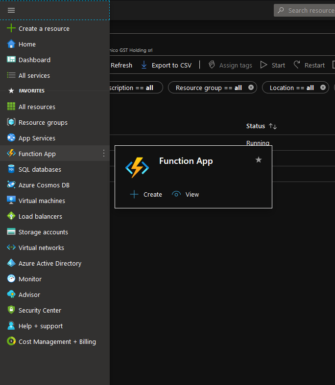
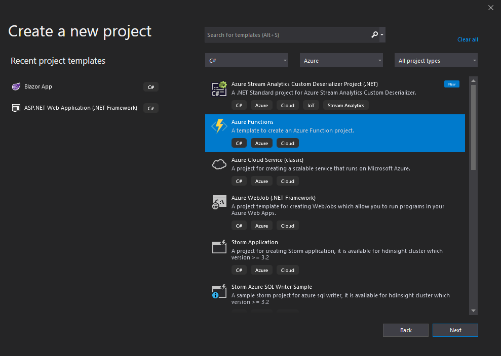
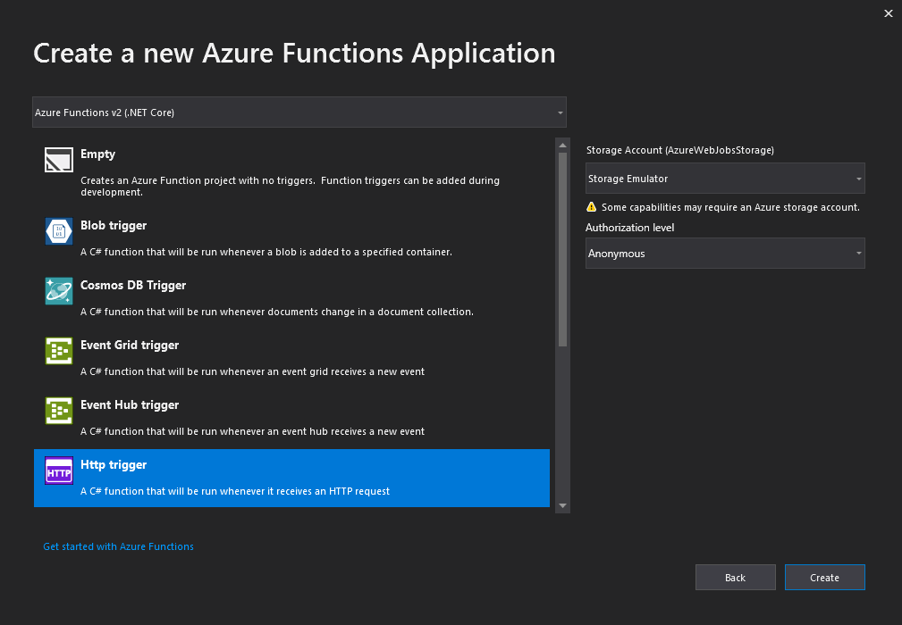
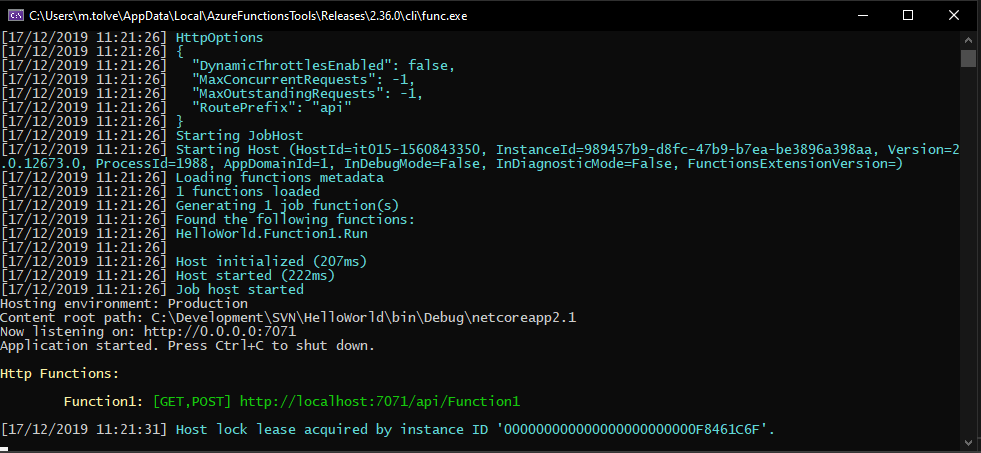
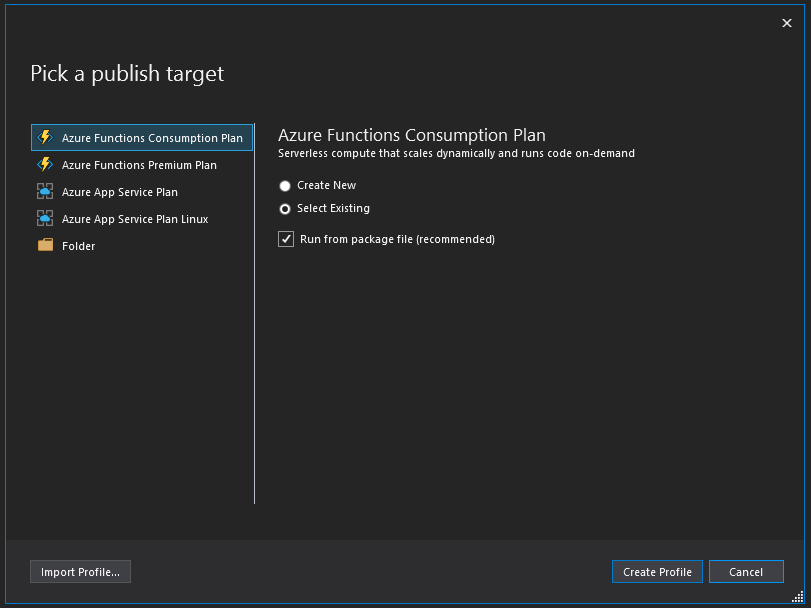
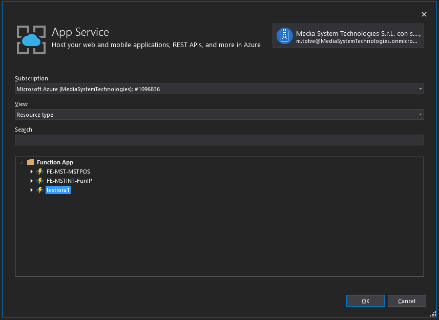
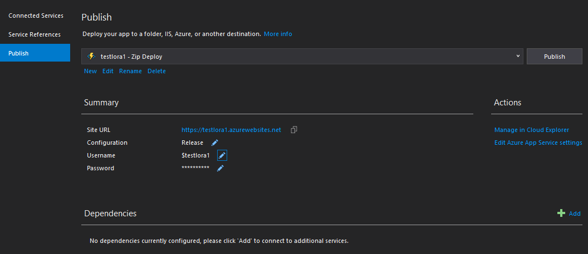

Azure Function
Le Azure Functions rappresentano solo in parte un nuovo servizio, dato che si tratta di un'evoluzione di un servizio già esistente, le Azure Web Jobs, e consentono di esporre delle funzionalità ben definite in maniera tale che siano utilizzabili da remoto da applicativi o anche da altre funzioni o servizi.
Sono quindi un'opzione molto utile anche perché risultano facilmente scalabili in base alle necessità.
Introduzione
Le Azure Functions vengono di fatto contenute in una Function App, che costituisce un'altra modalità di utilizzo degli App Services, e infatti le ritroviamo nell'omonimo elenco.
Metaforicamente possiamo pensare idealmente alla nostra Function App come ad una cassetta degli attrezzi e alle Azure Functions come agli attrezzi in essa contenuta, continuando potremmo dire che gli attrezzi, quando servono, vengono utilizzati e poi riposti fino alla prossima necessità.
Quest'ultima affermazione vuole sottolineare come le azure functions sono attivabili on demand, ovvero dal punto di vista logico (e non solo) possono non essere sempre esposte ed attive, piuttosto possono funzionare come una sorta di trigger e vengono appunto anche gestiti come tali.
Esse sono un'ottima soluzione per l'elaborazione dei dati, l'integrazione di sistemi, l'IoT o la compilazione di semplici API o Microservices. Azure fornisce una serie di template preconfezionati per iniziare, i quali racchiudono alcuni scenari chiave come ad esempio:
- HTTPTrigger : attiva l'esecuzione del codice usando una richiesta HTTP.
- TimerTrigger : esegue attività di pulizia o altre attività batch secondo una pianificazione predefinita come potrebbe essere una funzione attivata da un timer o schedulata in maniera ricorrente.
- CosmosDBTrigger : elabora i documenti di Azure Cosmos DB quando vengono aggiunti o aggiornati nelle raccolte in un database NoSQL.
- BlobTrigger : elabora i BLOB di archiviazione di Azure quando vengono aggiunti ai contenitori. Questa funzione può essere usata ad esempio per il ridimensionamento delle immagini.
- QueueTrigger : risponde ai messaggi che arrivano in una coda di archiviazione di Azure.
- EventGridTrigger : rispondere agli eventi inviati a una sottoscrizione nella Griglia di eventi di Azure. Supporta un modello basato su sottoscrizione per la ricezione di eventi, che include funzioni di filtro. Una buona soluzione per la compilazione di architetture basate su eventi, come ad esempio Automatizzare il ridimensionamento delle immagini caricate con EventGrid.
- EventHubTrigger : risponde agli eventi inviati a un hub eventi di Azure. È particolarmente utile negli scenari di strumentazione delle applicazioni, elaborazione dei flussi di lavoro o dell'esperienza utente e di Internet delle cose (IoT).
- ServiceBusQueueTrigger : connette il codice ad altri servizi di Azure o locali rimanendo in ascolto sulle code di messaggi.
- ServiceBusTopicTrigger : connette il codice ad altri servizi di Azure o servizi locali mediante la sottoscrizione di argomenti.
Resta chiaro che non è assolutamente obbligatorio scegliere di iniziare lo sviluppo a partire da un template, è possibile sviluppare partendo da zero utilizzando strumenti come Visual Studio o Visual Studio Code che integrano nativamente il supporto ad Azure. È possibile aggiungere in qualsiasi momento il componente aggiuntivo di Visual Studio per lo Sviluppo di Azure, questo metterà a disposizione una serie di strumenti per lo sviluppo delle nostre fantastiche Azure Function.

I principali linguaggi di programmaizone supportati sono:
- C#
- Java
- Javascript
- PowerShell
- Python
Prima di creare la nostra prima function è necessario creare il container che la conterrà, per fare ciò possiamo partire dalla pagina ufficiale Azure Function oppure utilizzando la dashboard di Azure come nell'immagine

e creaiamo una Function App, il nome che le assegneremo dovrà essere univoco proprio in virtù del fatto che in fondo si tratta di una App Service. La creazione della Function App avviene per step e in questo Azure ci aiuta molto fermo restando che alcuni parametri di configurazione è necessario conoscerli a priori per cui, in una realtà aziendale come la nostra, ci vengono in aiuto (e meno male che esistono) i colleghi del reparto NOC.
Una volta creato il "container" potremo procedere alla creazione delle singole function.
Sviluppo
Come di rito la prima cosa che faremo è scrivere la nostra prima fantastica function Hello World, partendo dalla creazione fino alla pubblicazione su Azure utilizzando Visual Studio 2019. Per fare ciò è necessario accertarsi che sia installato il carico di lavoro Sviluppo di Azure in VS2019 ed avere una sottoscrizone attiva o creare un account gratuito sulla piattaforma Azure.
le Azure Functions hanno una forte integrazione con Git, sia esso appoggiato su GitHub, su Visual Studio Team Services o su server privato e quindi possiamo modificare il codice da un qualsiasi strumento di editing che consenta l'integrazione con uno di questi sistemi di versioning.
Creazione del progetto
Il modello di progetto Azure Function in Visual Studio crea un progetto che può essere pubblicato in un'app per le funzioni in Azure (Function App, il container di cui parlavamo prima). Un'app per le funzioni consente di raggruppare le funzioni come un'unità logica per la gestione, la distribuzione e la condivisione delle risorse.

Nella finestra di dialogo Crea un nuovo progetto cercare functions e scegliere il modello Funzioni di Azure e selezionare Avanti, nella schermata successiva immettere un nome per il progetto e selezionare Next (il nome dell'app per le funzioni deve essere valido come spazio dei nomi C#, quindi non usare caratteri di sottolineatura, trattini o altri caratteri non alfanumerici)

Nella schemata successiva possiamo utilizzare i seguenti parametri:
- Funzioni di Azure v2 (.NET Core)
- Trigger HTTP
- Account di archiviazione: Emulatore di archiviazione
- Livello di autorizzazione: Anonimo
A questo punto dovremmo avere il nostro progetto pronto, VS2019 dovrebbe aver creato una classe con del codice boilerplate il quale invia una risposta HTTP che include un valore presente nel corpo della richiesta (POST) o nella query string (GET).
namespace HelloWorld
{
public static class Function1
{
[FunctionName("Function1")]
public static async Task<IActionResult> Run(
[HttpTrigger(AuthorizationLevel.Anonymous, "get", "post", Route = null)] HttpRequest req,
ILogger log)
{
log.LogInformation("C# HTTP trigger function processed a request.");
string name = req.Query["name"];
string requestBody = await new StreamReader(req.Body).ReadToEndAsync();
dynamic data = JsonConvert.DeserializeObject(requestBody);
name = name ?? data?.name;
return name != null
? (ActionResult)new OkObjectResult($"Hello, {name}")
: new BadRequestObjectResult("Please pass a name on the query string or in the request body");
}
}
}
Esecuzione in locale
Come sempre è possibile eseguire in locale la nostra function in quanto VS2019 integra Azure Function Core Tools ricordandoci che i livelli di autorizzazione non vengono mai applicati durante l'esecuzione in locale.

Una volta lanciato in locale il nostro progetto (F5) ci basterà aprire il browser e utilizzare l'indirizzo su cui è esposta la nostra function localhost:7071/api/HttpTrigger?name="Michele" con dal parametro name nella query string oppurem se volessimo soìimulare una richiesta di tipo POST, potremmo utilizzare un REST Client come ad esempio Insomnia per testarne il corretto funzionamento.

Pubblicazione in Azure
Come prima cosa andiamo a definire, all'interno di VS2019, un profilo di pubblicazione

In maniera molto intuitiva seguiamo il wizard...trattandosi di una funzione Http Trigger "on-demand" scegliamo di pubblicare una Azure Function Consumption Plan e scegliamo di voler pubblicare su una Function App esistente, nella schermata successiva non ci resta altro che scegliere dove vogliamo pubbblicare la function appena creata e completare la procedura.


Conclusioni
Possiamo dire che Azure ha aperto un nuovo modo e un nuovo mondo, non è difficile capire o immaginare quanto potenziale possa avere questa nuova modalità di esporre servizi sul web e, come sempre, la documentazione disponibile è molto esaustiva e non mancano esempi e spiegazioni dettagliate.